No son solo flores.
Es todo lo que me haces sentir.
Las flores amarillas hablan de alegría, cariño, esperanza y de esos pequeños momentos que uno quisiera guardar para siempre.
Por eso quise hacerte este rincón: para que cada pétalo te recuerde algo que quizá a veces olvidas… que eres alguien admirable, querida y profundamente especial.
Pedacitos de ti.
Dieciocho formas de recordar lo bonita que es tu existencia.
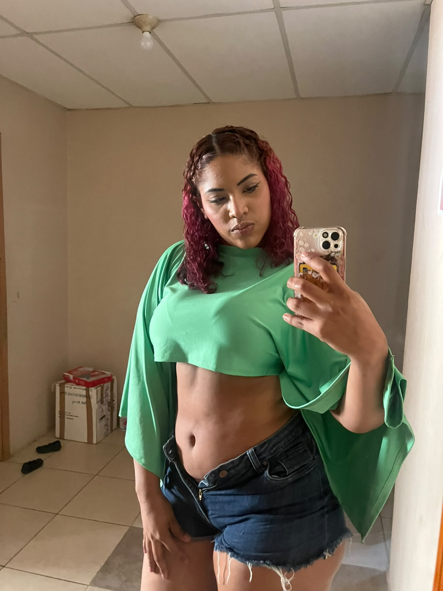
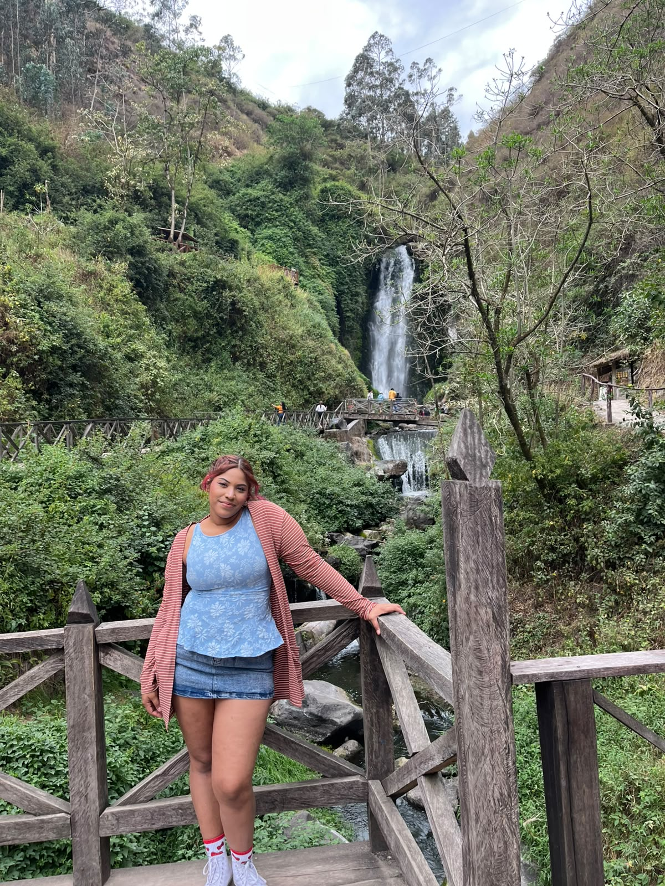
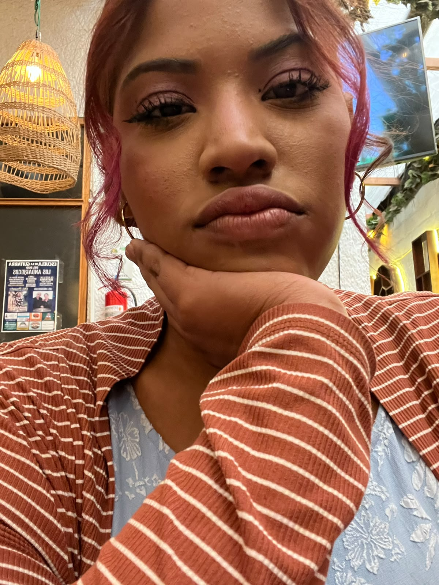
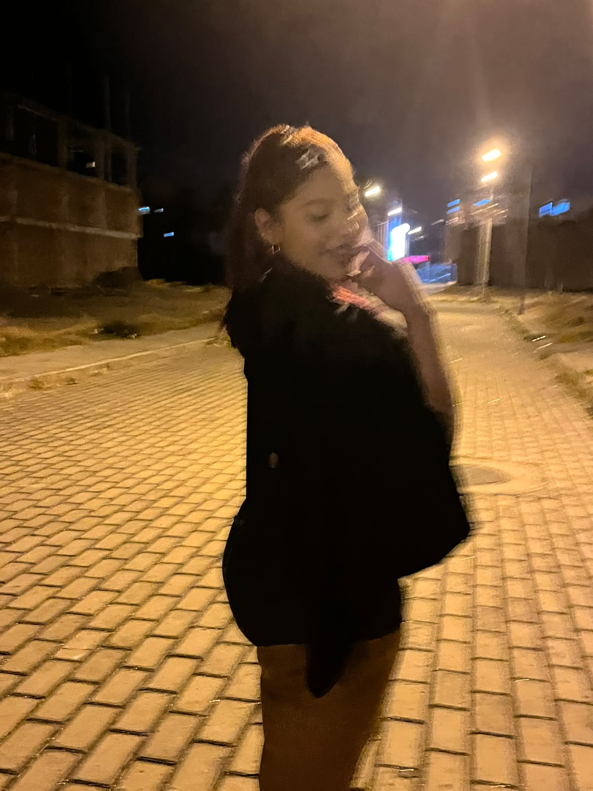
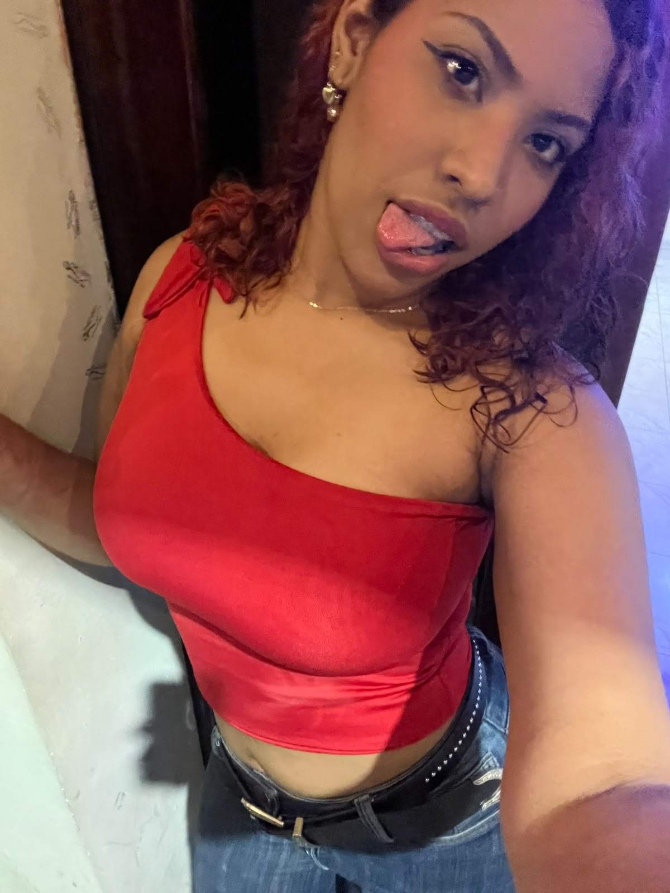
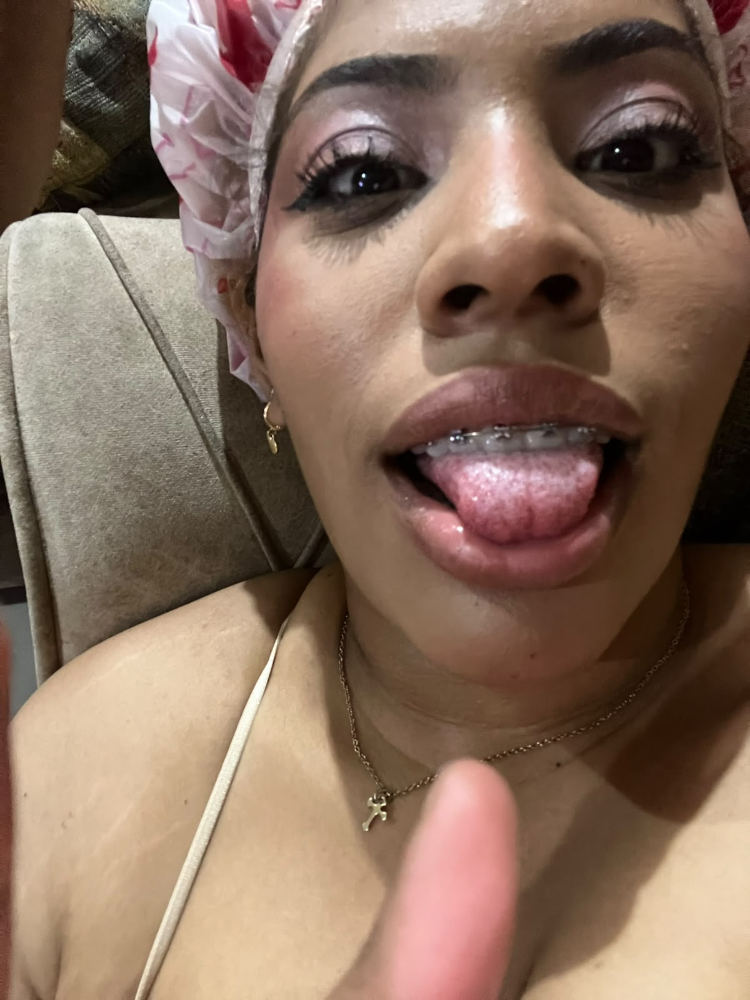
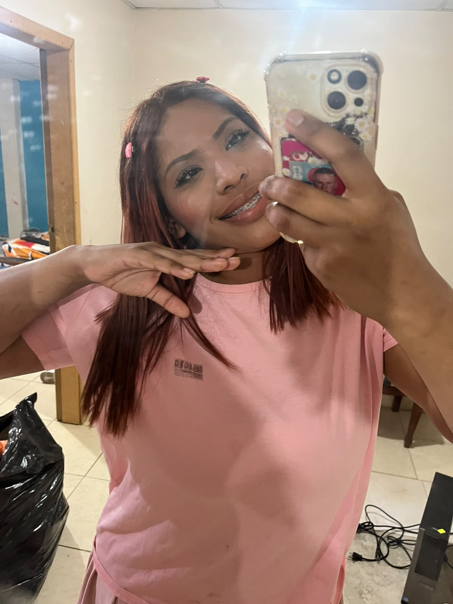
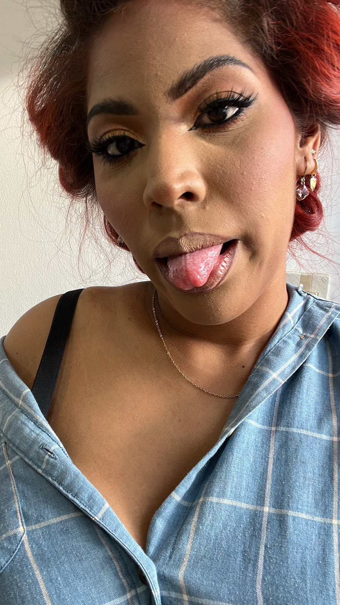

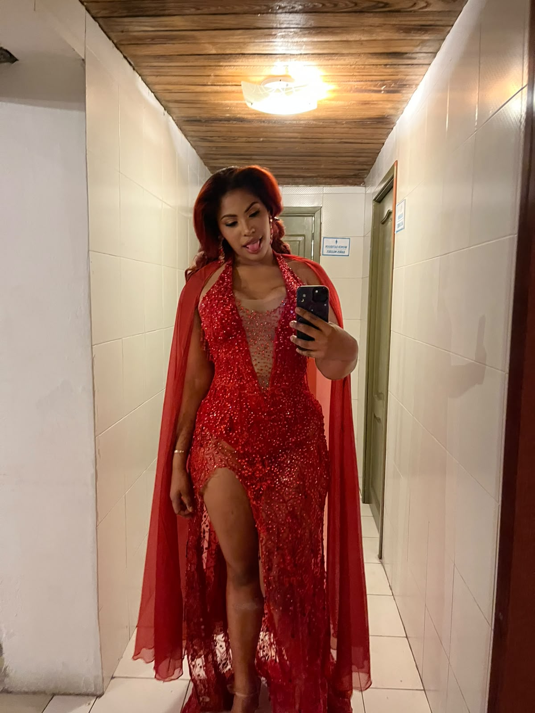
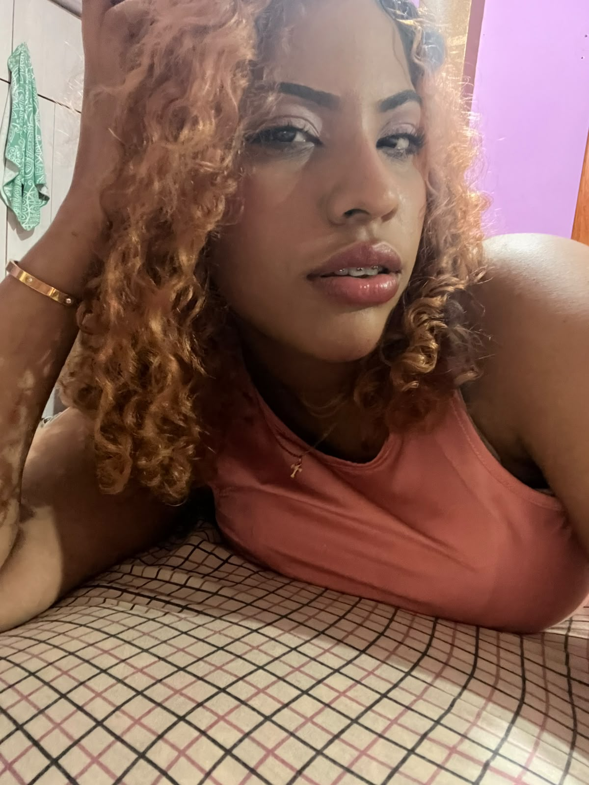

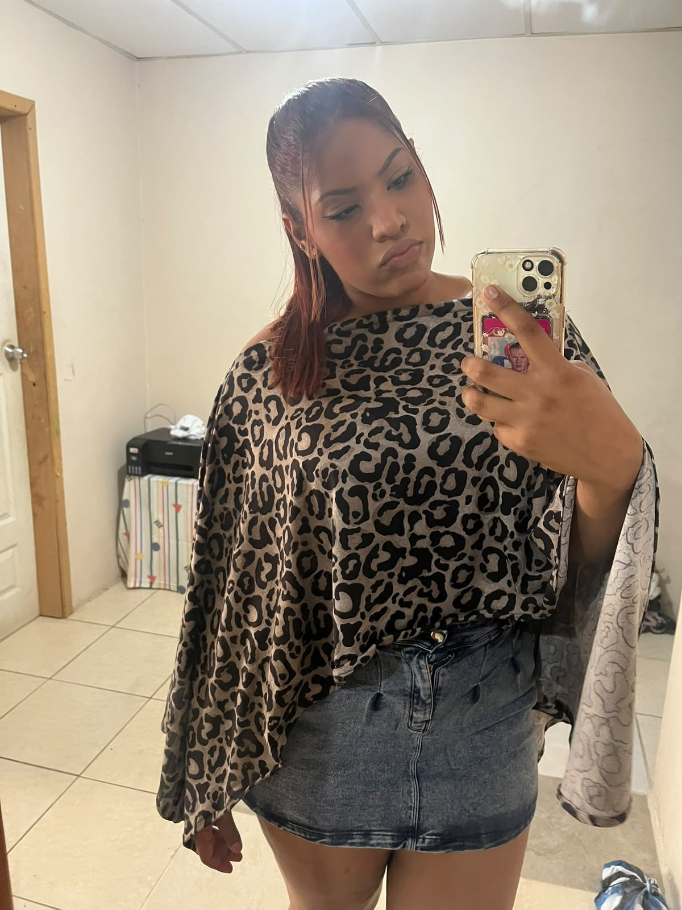
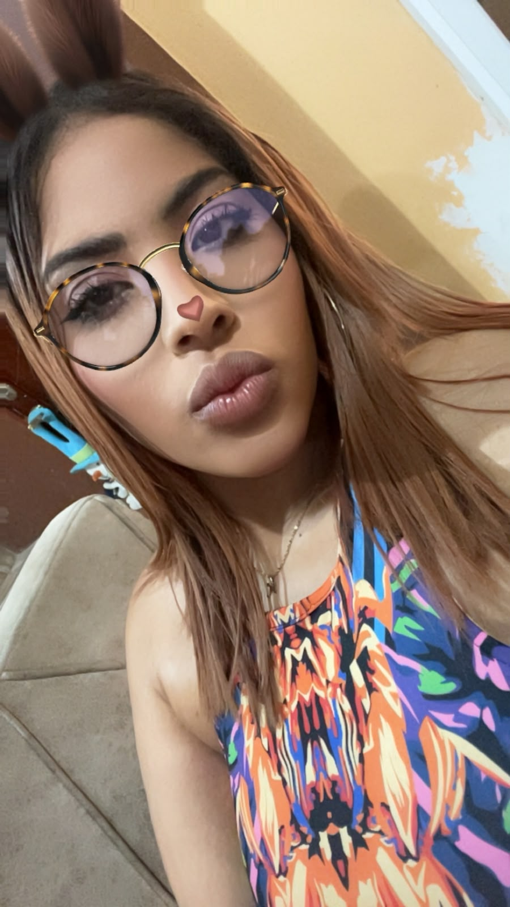
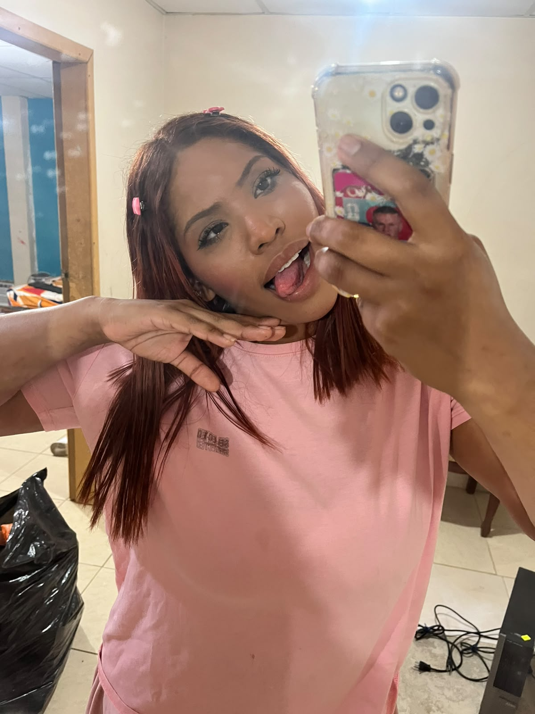
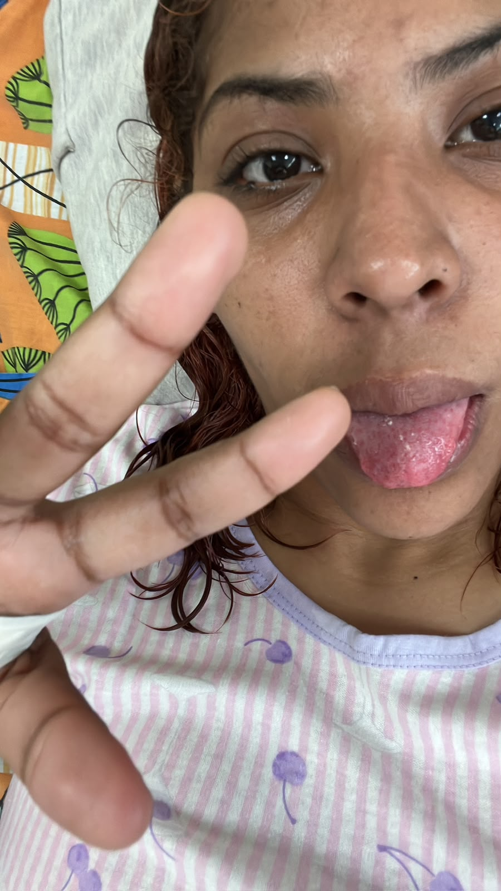

Haz clic.
Déjala florecer.
Cada flor guarda un mensaje. No tengas miedo de tocarla.
Mi pequeña carta
para ti, Karyme.
Querida Karyme:
No sé si unas cuantas palabras puedan explicar todo lo que quisiera decirte, pero aun así quiero intentarlo. Hay personas que uno conoce y ya; y hay otras que, sin darse cuenta, empiezan a ocupar un lugar especial. Tú eres de esas personas.
Quiero que sepas que te admiro muchísimo. No solamente por tu forma de verte, por tu sonrisa o por esos pequeños detalles que hacen que me encante mirarte. Te admiro por lo que llevas dentro. Por ese corazón tan grande que tienes, por la manera en que puedes preocuparte por los demás y por seguir siendo buena incluso cuando tú misma estás atravesando cosas que no son fáciles.
“Si algún día no encuentras luz en el camino,
recuerda que también existen personas
que te miran y ven un amanecer.”
Quizá tú no siempre puedas verlo, pero yo sí veo muchas cosas bonitas en ti. Veo una persona que merece cariño sin condiciones, paciencia, abrazos sinceros y días tranquilos. Veo a alguien que todavía tiene muchísimo por vivir, descubrir y construir.
Y si alguna vez la vida te hace sentir pequeña, o te hace pensar que no eres suficiente, quiero que vuelvas a estas palabras. No necesitas demostrarle nada a nadie para merecer amor. No tienes que ser perfecta. No tienes que esconder tus días malos. Sigues siendo tú, y eso ya es algo que para mí vale muchísimo.
Hay flores que nacen con el sol,
y otras que esperan la lluvia.
Tú eres un poquito de ambas:
luz cuando puedes,
refugio cuando quieres,
y belleza incluso cuando no la notas.
Por eso hoy te regalo amarillos:
para que cuando los mires
recuerdes que todavía hay días
que pueden volver a florecer.
Te quiero muchísimo, Karyme. Mucho más de lo que a veces sé explicar. Y aunque estas flores sean solamente una pequeña página en internet, todo lo que hay detrás de ellas es real: el cariño, la admiración, las ganas de verte bien y el deseo de que nunca olvides la persona tan bonita que eres.
Ojalá puedas mirarte algún día con los mismos ojos con los que te miran las personas que te quieren. Ojalá puedas darte un poquito del amor que tantas veces das a los demás. Y ojalá, cuando lleguen días difíciles, recuerdes que no tienes que atravesarlos pensando que estás sola.
Con muchísimo cariño,
alguien que te quiere y te admira más de lo que imaginas.
Y UNA ÚLTIMA COSA...
Que nunca se te olvide
lo especial que eres.
Te quiero, Karyme. 💛